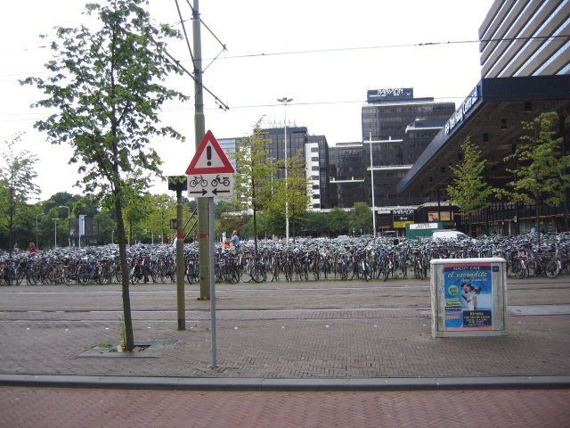

Bicycles are popular throughout the Netherlands, and all of Europe as far as I know. Picture this parking lot as a huge mall parking lot, except with 5 bikes for every car. This picture doesn't do it justice. Lots of bicycles, in other words.
Cool abstract art. I took pictures whenever I thought something looked intriguing, in addition to when Miller was impressed.
We spotted this sign around The Hague, and figured it was worth snapping a picture at.
A statue with a birdie on top. A master's photography in action.
A Dutch black ladybug with red spots. Yes, it's backwards.
An impressive, large, detailed painting in one of The Hague's art museums.
The Hague had a peaceful lake that you could fish bikes out of. Apparently city employees were actually doing that.
Here's another painting in the museum we stopped at.
This painting looked nasty enough to capture in a photo. See a corpse's arm get disected.
Random archway in The Hague.

This building was the precursor to the Netherlands's Second Parliament building on a tour. The Parliament building which we werne't allowed to take pictures of was much more impressive.
Outdoor flea market in The Hague. The difference about this flea market is that it catered to much wealthier people.
A random canal in The Hague
Walking back to The Hague's train station, we encountered these deer, just sitting out to relax and be looked at. We looked at them. There was an aviary there too. All free, all for public viewing. Kind of nice.
A splendid shot of buildings in The Hague.
The best canal shot I could manage in The Hague.
Back